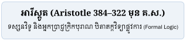
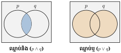
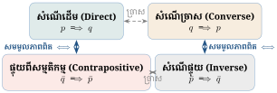
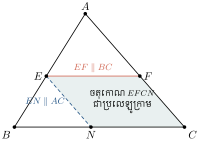

អារីស្តូត និងកំណើតនៃតក្កវិទ្យា

នៅក្នុងជំពូកនេះ គេចាប់ផ្តើមសិក្សាអំពីបញ្ញត្តិមូលដ្ឋាននៃតក្កវិទ្យា សំណុំ និងរបៀបធ្វើសម្រាយបញ្ជាក់គណិតវិទ្យា តាមបែបតក្កវិទ្យាដែលជាមធ្យោបាយដ៏សំខាន់មួយក្នុងការអភិវឌ្ឍបំណិនគិត និងការដោះស្រាយចំណោទបញ្ហាតាមបែបគណិតវិទ្យា ។ បន្ទាប់ពីទទួលបានបញ្ញត្តិមូលដ្ឋាននៃតក្កវិទ្យា សំណុំ និងបំណិនក្នុងការធ្វើសម្រាយបញ្ជាក់គណិតវិទ្យា គេនឹងអាចឈានទៅសិក្សាពីសញ្ញាណ និងប្រមាណវិធីនៃចំនួនសនិទាន អសនិទាន ចំនួនពិត និងសិក្សាអំពីប្រព័ន្ធរបាប់គោល ១០ និងគោល ២ ដែលមានសារៈសំខាន់សម្រាប់ការសិក្សាផ្នែកវិទ្យាសាស្ត្រកុំព្យូទ័រ និងអេឡិចត្រូនិក ។
- ប្រាប់ពីសញ្ញាណសំណើ និងកំណត់តម្លៃភាពពិតនៃសំណើបានត្រឹមត្រូវ
- កំណត់សំណើឈ្នាប់តក្កវិទ្យា និងបកស្រាយតម្លៃភាពពិតនៃសំណើឈ្នាប់តក្កវិទ្យាបានត្រឹមត្រូវ
- ដោះស្រាយលំហាត់ដោយស្រាយបញ្ជាក់តាមបែបតក្កវិទ្យាបានត្រឹមត្រូវ ។
1. សំណើ និងតម្លៃភាពពិត
ឧទាហរណ៍ 1 : ក្នុងការពិភាក្សាគ្នា គេតែងសង្កេតឃើញថា មានការលើកឡើងនូវអំណះអំណាងផ្សេងៗគ្នា ដែលអំណះអំណាងខ្លះពិត ខ្លះមិនពិត (ពេលដែលគេដឹង) និងខ្លះទៀតមិនអាចសន្និដ្ឋានបាន ៖
- ក. «\(\displaystyle 5\) ជាចំនួនបឋម» ជាអំណះអំណាងពិត ។
- ខ. «ខែធ្នូមាន \(\displaystyle 5\) ថ្ងៃ» ជាអំណះអំណាងមិនពិត ។
- គ. «សុភីមានមាឌតូច» ជាអំណះអំណាងមិនអាចថាពិតឬមិនពិត ព្រោះគេមិនបានកំណត់ថាទំហំខ្លួនប៉ុនណាដែលបញ្ជាក់ថាមានមាឌតូចនោះ ។
អំណះអំណាង (ក) ដែលគេអាចសម្រេចបានថាពិត និងអំណះអំណាង (ខ) ដែលគេអាចសម្រេចថាមិនពិត ហៅថា សំណើ ។ ចំណែកអំណះអំណាង (គ) មិនមែនជាសំណើទេ ។
គេតាងឈ្មោះនៃសំណើដោយអក្សរតូច \(\displaystyle p, q, r, s, \dots\)
សំណើ គឺជាអំណះអំណាងទាំងឡាយណាដែលគេអាចសម្រេចបានច្បាស់លាស់ថាពិត ឬមិនពិត (តែមិនអាចពិតផងនិងមិនពិតផងក្នុងពេលតែមួយបានឡើយ) ។
តម្លៃភាពពិត
- បើសំណើ \(\displaystyle p\) ពិត នោះគេថា \(\displaystyle p\) មានតម្លៃភាពពិតស្មើនឹង \(\displaystyle 1\) ។ គេកំណត់សរសេរ ត.\(\displaystyle (p) = 1\) (ឬ \(\displaystyle \text{T}\)) ។
- បើសំណើ \(\displaystyle p\) មិនពិត នោះគេថា \(\displaystyle p\) មានតម្លៃភាពពិតស្មើនឹង \(\displaystyle 0\) ។ គេកំណត់សរសេរ ត.\(\displaystyle (p) = 0\) (ឬ \(\displaystyle \text{F}\)) ។
ចូរជ្រើសរើសអំណះអំណាងដែលជាសំណើក្នុងចំណោមអំណះអំណាងខាងក្រោម ហើយកំណត់តម្លៃភាពពិត ៖
- ក. សត្វគោតូចជាងសត្វឆ្មា ។ (ជាសំណើ, តម្លៃភាពពិត ត. = 0)
- ខ. \(\displaystyle 2021\) ចែកដាច់នឹង \(\displaystyle 3\) ។ (ជាសំណើ, \(\displaystyle 2+0+2+1=5\) មិនចែកដាច់នឹង 3 \(\displaystyle \implies\) ត. = 0)
- គ. ថ្ងៃស្អែកនឹងមានភ្លៀងខ្លាំងបំផុតនៅភ្នំពេញ ។ (មិនមែនជាសំណើទេ ព្រោះមិនទាន់អាចសម្រេចថាពិតឬមិនពិត)
2. ឈ្នាប់តក្កវិទ្យា

2.1 ឈ្នាប់និង (\(\displaystyle \wedge\) - Conjunction)
គេភ្ជាប់សំណើ \(\displaystyle p\) និង \(\displaystyle q\) ដោយឈ្នាប់ «និង» នោះគេបានសំណើថ្មីមួយហៅថា សំណើឈ្នាប់និង តាងដោយ \(\displaystyle p \wedge q\) (អានថា \(\displaystyle p\) និង \(\displaystyle q\)) ។
តារាងភាពពិតនៃឈ្នាប់និង
| \(\displaystyle p\) | \(\displaystyle q\) | \(\displaystyle p \wedge q\) |
| \(\displaystyle 1\) | \(\displaystyle 1\) | \(\displaystyle 1\) |
| \(\displaystyle 1\) | \(\displaystyle 0\) | \(\displaystyle 0\) |
| \(\displaystyle 0\) | \(\displaystyle 1\) | \(\displaystyle 0\) |
| \(\displaystyle 0\) | \(\displaystyle 0\) | \(\displaystyle 0\) |
សម្គាល់ ៖ សំណើ \(\displaystyle p \wedge q\) ពិតតែក្នុងករណីសំណើ \(\displaystyle p\) និង \(\displaystyle q\) ពិតទាំងពីរព្រមគ្នា ។
គេមានសំណើពីរ \(\displaystyle p : \text{«} 7 \text{ ជាតួចែកនៃ } 15 \text{»}\) និង \(\displaystyle q : \text{«} 7 \text{ ជាចំនួនបឋម»}\) ។ កំណត់សំណើ \(\displaystyle p \wedge q\) និងតម្លៃភាពពិតនៃ \(\displaystyle p \wedge q\) ។
- \(\displaystyle p \wedge q : \text{«} 7 \text{ ជាតួចែកនៃ } 15 \text{ និងជាចំនួនបឋម»}\)
- ដោយ ត.\(\displaystyle (p) = 0\) និង ត.\(\displaystyle (q) = 1\) នោះ ត.\(\displaystyle (p \wedge q) = 0\) ។
គេមានសំណើពីរ \(\displaystyle r : 24 \text{ ជាពហុគុណនៃ } 6\) និង \(\displaystyle s : 24 \text{ ជាចំនួនគត់គូ}\) ។ ចូរកំណត់សំណើ \(\displaystyle r \wedge s\) និង ត.\(\displaystyle (r \wedge s)\) ។
ចម្លើយ ៖ \(\displaystyle r \wedge s : \text{«} 24 \text{ ជាពហុគុណនៃ } 6 \text{ និងជាចំនួនគត់គូ»}\) ។ ដោយ ត.\(\displaystyle (r)=1\) និង ត.\(\displaystyle (s)=1\) នោះ ត.\(\displaystyle (r \wedge s) = 1\) ។
2.2 ឈ្នាប់ឬ (\(\displaystyle \vee\) - Disjunction)
គេភ្ជាប់សំណើ \(\displaystyle p\) និង \(\displaystyle q\) ដោយឈ្នាប់ «ឬ» នោះគេបានសំណើថ្មីហៅថា សំណើឈ្នាប់ឬ តាងដោយ \(\displaystyle p \vee q\) (អានថា \(\displaystyle p\) ឬ \(\displaystyle q\)) ។
តារាងភាពពិតនៃឈ្នាប់ឬ
| \(\displaystyle p\) | \(\displaystyle q\) | \(\displaystyle p \vee q\) |
| \(\displaystyle 1\) | \(\displaystyle 1\) | \(\displaystyle 1\) |
| \(\displaystyle 1\) | \(\displaystyle 0\) | \(\displaystyle 1\) |
| \(\displaystyle 0\) | \(\displaystyle 1\) | \(\displaystyle 1\) |
| \(\displaystyle 0\) | \(\displaystyle 0\) | \(\displaystyle 0\) |
សម្គាល់ ៖ សំណើ \(\displaystyle p \vee q\) មិនពិតតែក្នុងករណីដែលសំណើ \(\displaystyle p\) និង \(\displaystyle q\) មិនពិតទាំងពីរព្រមគ្នា ។ ក្រៅពីនោះវាជាសំណើពិតជានិច្ច ។
គេមានសំណើពីរ \(\displaystyle r : 2021 \text{ ចែកដាច់នឹង } 3\) និង \(\displaystyle s : 2024 \text{ ជាចំនួនគត់គូ}\) ។ កំណត់សំណើ \(\displaystyle r \vee s\) និងតម្លៃភាពពិត ។
\(\displaystyle r \vee s : \text{«} 2021 \text{ ចែកដាច់នឹង } 3 \text{ ឬ } 2024 \text{ ជាចំនួនគត់គូ»}\) ។
ដោយ ត.\(\displaystyle (r) = 0\), ត.\(\displaystyle (s) = 1\) នោះ ត.\(\displaystyle (r \vee s) = 1\) ។
2.3 ឈ្នាប់មិន (\(\displaystyle \sim\) ឬ \(\displaystyle \bar{p}\) - Negation)
សំណើបដិសេធនៃសំណើ \(\displaystyle p\) ហៅថា សំណើឈ្នាប់មិន តាងដោយ \(\displaystyle \bar{p}\) ឬ \(\displaystyle \sim p\) (អានថាមិន \(\displaystyle p\)) ។
តារាងភាពពិតនៃឈ្នាប់មិន
| \(\displaystyle p\) | \(\displaystyle \bar{p}\) |
| \(\displaystyle 1\) | \(\displaystyle 0\) |
| \(\displaystyle 0\) | \(\displaystyle 1\) |
- បដិសេធពីរដង ៖ \(\displaystyle \bar{\bar{p}} = p\) ។
លក្ខណៈដឺម៉កហ្កង់ (De Morgan Laws) ៖
\[\overline{p \wedge q} = \bar{p} \vee \bar{q} \quad \text{និង} \quad \overline{p \vee q} = \bar{p} \wedge \bar{q}\]
តារាងផ្ទៀងផ្ទាត់លក្ខណៈ De Morgan
| \(\displaystyle p\) | \(\displaystyle q\) | \(\displaystyle p \wedge q\) | \(\displaystyle \overline{p \wedge q}\) | \(\displaystyle \bar{p}\) | \(\displaystyle \bar{q}\) | \(\displaystyle \bar{p} \vee \bar{q}\) | \(\displaystyle p \vee q\) | \(\displaystyle \overline{p \vee q}\) | \(\displaystyle \bar{p} \wedge \bar{q}\) |
| \(\displaystyle 1\) | \(\displaystyle 1\) | \(\displaystyle 1\) | \(\displaystyle 0\) | \(\displaystyle 0\) | \(\displaystyle 0\) | \(\displaystyle 0\) | \(\displaystyle 1\) | \(\displaystyle 0\) | \(\displaystyle 0\) |
| \(\displaystyle 1\) | \(\displaystyle 0\) | \(\displaystyle 0\) | \(\displaystyle 1\) | \(\displaystyle 0\) | \(\displaystyle 1\) | \(\displaystyle 1\) | \(\displaystyle 1\) | \(\displaystyle 0\) | \(\displaystyle 0\) |
| \(\displaystyle 0\) | \(\displaystyle 1\) | \(\displaystyle 0\) | \(\displaystyle 1\) | \(\displaystyle 1\) | \(\displaystyle 0\) | \(\displaystyle 1\) | \(\displaystyle 1\) | \(\displaystyle 0\) | \(\displaystyle 0\) |
| \(\displaystyle 0\) | \(\displaystyle 0\) | \(\displaystyle 0\) | \(\displaystyle 1\) | \(\displaystyle 1\) | \(\displaystyle 1\) | \(\displaystyle 1\) | \(\displaystyle 0\) | \(\displaystyle 1\) | \(\displaystyle 1\) |
2.4 ឈ្នាប់នាំឱ្យ (\(\displaystyle \Rightarrow\) - Implication)
សំណើ «បើ \(\displaystyle p\) នោះ \(\displaystyle q\)» ភ្ជាប់ដោយឈ្នាប់នាំឱ្យ ហៅថា សំណើលក្ខខណ្ឌ តាងដោយ \(\displaystyle p \Rightarrow q\) ។
ក្នុងនេះ \(\displaystyle p\) ហៅថា បុព្វសំណើ (សម្មតិកម្ម) ហើយ \(\displaystyle q\) ហៅថា វិបាក (សេចក្តីសន្និដ្ឋាន) ។
តារាងភាពពិតនៃឈ្នាប់នាំឱ្យ
| \(\displaystyle p\) | \(\displaystyle q\) | \(\displaystyle p \Rightarrow q\) |
| \(\displaystyle 1\) | \(\displaystyle 1\) | \(\displaystyle 1\) |
| \(\displaystyle 1\) | \(\displaystyle 0\) | \(\displaystyle 0\) |
| \(\displaystyle 0\) | \(\displaystyle 1\) | \(\displaystyle 1\) |
| \(\displaystyle 0\) | \(\displaystyle 0\) | \(\displaystyle 1\) |
សម្គាល់ ៖ សំណើ \(\displaystyle p \Rightarrow q\) មិនពិតតែក្នុងករណីមួយគត់ គឺ \(\displaystyle p\) ពិត ហើយ \(\displaystyle q\) មិនពិត (\(\displaystyle 1 \Rightarrow 0\) គឺ \(\displaystyle 0\)) ។

សំណើទាក់ទងនឹង \(\displaystyle p \Rightarrow q\) ៖
- សំណើច្រាស (Converse) ៖ \(\displaystyle q \Rightarrow p\)
- សំណើផ្ទុយ (Inverse) ៖ \(\displaystyle \bar{p} \Rightarrow \bar{q}\)
- សំណើផ្ទុយពីសម្មតិកម្ម (Contrapositive) ៖ \(\displaystyle \bar{q} \Rightarrow \bar{p}\)
សន្និដ្ឋានសំខាន់ ៖ សំណើដើម \(\displaystyle p \Rightarrow q\) និងសំណើផ្ទុយពីសម្មតិកម្ម \(\displaystyle \bar{q} \Rightarrow \bar{p}\) មានតម្លៃភាពពិតដូចគ្នាជានិច្ច ៖
2.5 ឈ្នាប់សមមូល (\(\displaystyle \Leftrightarrow\) - Equivalence)
សំណើ «\(\displaystyle p\) លុះត្រាតែ \(\displaystyle q\)» ឬ «\(\displaystyle p\) សមមូល \(\displaystyle q\)» តាងដោយ \(\displaystyle p \Leftrightarrow q\) ។
សម្គាល់ ៖ សំណើ \(\displaystyle p \Leftrightarrow q\) ពិត លុះត្រាតែសំណើទាំងពីរមានតម្លៃភាពពិតដូចគ្នា (ពិតទាំងពីរ ឬមិនពិតទាំងពីរ) ។
ពេលនោះ គេថាសំណើ \(\displaystyle p\) ជា លក្ខខណ្ឌចាំបាច់ និងគ្រប់គ្រាន់ សម្រាប់សំណើ \(\displaystyle q\) ។
តារាងភាពពិតនៃឈ្នាប់សមមូល
| \(\displaystyle p\) | \(\displaystyle q\) | \(\displaystyle p \Rightarrow q\) | \(\displaystyle q \Rightarrow p\) | \(\displaystyle p \Leftrightarrow q\) |
| \(\displaystyle 1\) | \(\displaystyle 1\) | \(\displaystyle 1\) | \(\displaystyle 1\) | \(\displaystyle 1\) |
| \(\displaystyle 1\) | \(\displaystyle 0\) | \(\displaystyle 0\) | \(\displaystyle 1\) | \(\displaystyle 0\) |
| \(\displaystyle 0\) | \(\displaystyle 1\) | \(\displaystyle 1\) | \(\displaystyle 0\) | \(\displaystyle 0\) |
| \(\displaystyle 0\) | \(\displaystyle 0\) | \(\displaystyle 1\) | \(\displaystyle 1\) | \(\displaystyle 1\) |
3. ប្រភេទនៃសម្រាយបញ្ជាក់គណិតវិទ្យា
3.1 ការស្រាយបញ្ជាក់ដោយផ្ទាល់ (Direct Proof)
ជាការស្រាយបញ្ជាក់ត្រង់ៗពីសម្មតិកម្ម \(\displaystyle p\) តាមទ្រឹស្តីបទ រូបមន្ត ឬនិយមន័យរហូតទាញបានសេចក្តីសន្និដ្ឋាន \(\displaystyle q\) ។
បង្ហាញថាបើ \(\displaystyle x\) និង \(\displaystyle y\) ជាចំនួនសនិទាន នោះ \(\displaystyle x+y\) គឺជាចំនួនសនិទាន ។
ដំណោះស្រាយ ៖ តាង \(\displaystyle x = \frac{a}{b}\) និង \(\displaystyle y = \frac{m}{n}\) ដែល \(\displaystyle a, b, m, n \in \mathbb{Z}\) និង \(\displaystyle b, n \ne 0\) ។
គេបាន \(\displaystyle x+y = \frac{a}{b} + \frac{m}{n} = \frac{an+bm}{bn}\) ។
ដោយ \(\displaystyle an+bm \in \mathbb{Z}\) និង \(\displaystyle bn \in \mathbb{Z}\) (\(\displaystyle bn \ne 0\)) នាំឱ្យ \(\displaystyle x+y\) ជាចំនួនសនិទាន (ពិត) ។
ក្នុង \(\displaystyle \triangle ABC\) ដែល \(\displaystyle EF \parallel BC\) ។ ស្រាយបញ្ជាក់ថា \(\displaystyle \frac{AE}{AB} = \frac{AF}{AC} = \frac{EF}{BC}\) ។

ដំណោះស្រាយ ៖ តាមទ្រឹស្តីបទតាលែស ក្នុង \(\displaystyle \triangle ABC\) មាន \(\displaystyle EF \parallel BC\) គេបាន \(\displaystyle \frac{AE}{AB} = \frac{AF}{AC} \quad (1)\) ។
សង់បន្ទាត់ \(\displaystyle EN \parallel AC\) (\(\displaystyle N\) នៅលើ \(\displaystyle BC\)) នោះចតុកោណ \(\displaystyle EFCN\) ជាប្រលេឡូក្រាម \(\displaystyle \implies NC = EF\) ។
តាមតាលែស គេបាន \(\displaystyle \frac{NC}{BC} = \frac{AE}{AB} \implies \frac{EF}{BC} = \frac{AE}{AB} \quad (2)\) ។
តាម (1) និង (2) ទាញបាន \(\displaystyle \frac{AE}{AB} = \frac{AF}{AC} = \frac{EF}{BC}\) (ពិត) ។
3.2 ការស្រាយបញ្ជាក់តាមសំណើផ្ទុយពីសម្មតិកម្ម (Contrapositive Proof)
ដើម្បីបង្ហាញថាសំណើ \(\displaystyle p \Rightarrow q\) ពិត គេអាចបង្ហាញថាសំណើ \(\displaystyle \bar{q} \Rightarrow \bar{p}\) ពិត ព្រោះសំណើទាំងពីរមានតម្លៃភាពពិតដូចគ្នា ។
ជំហានទាំង ៣ នៃសម្រាយបញ្ជាក់ ៖
- កំណត់សំណើ \(\displaystyle p\) និង \(\displaystyle q\) នៃសំណើដើម \(\displaystyle p \Rightarrow q\) ។
- កំណត់សំណើបដិសេធ \(\displaystyle \bar{p}\) និង \(\displaystyle \bar{q}\) ។
- សន្មតថា \(\displaystyle \bar{q}\) ពិត រួចបកស្រាយទាញរកឱ្យបាន \(\displaystyle \bar{p}\) ពិត ។ នោះទាញបាន \(\displaystyle p \Rightarrow q\) ពិត ។
បង្ហាញថា «បើ \(\displaystyle n^2\) ជាចំនួនគត់គូ នោះ \(\displaystyle n\) ជាចំនួនគត់គូ» ។
ដំណោះស្រាយ ៖
- សំណើដើម \(\displaystyle p \Rightarrow q\) ៖ \(\displaystyle p : n^2 \text{ ជាចំនួនគត់គូ}\), \(\displaystyle q : n \text{ ជាចំនួនគត់គូ}\) ។
- សំណើផ្ទុយពីសម្មតិកម្ម \(\displaystyle \bar{q} \Rightarrow \bar{p}\) ៖ «បើ \(\displaystyle n\) ជាចំនួនគត់សេស នោះ \(\displaystyle n^2\) ជាចំនួនគត់សេស» ។
- បង្ហាញថា \(\displaystyle \bar{q} \Rightarrow \bar{p}\) ពិត ៖ បើ \(\displaystyle n\) ជាចំនួនគត់សេស គេអាចតាង \(\displaystyle n = 2k+1\) (\(\displaystyle k \in \mathbb{Z}\)) ។
គេបាន \(\displaystyle n^2 = (2k+1)^2 = 4k^2 + 4k + 1 = 2(2k^2+2k) + 1 = 2m+1\) (\(\displaystyle m = 2k^2+2k \in \mathbb{Z}\)) ។
ដូច្នេះ \(\displaystyle n^2\) ជាចំនួនគត់សេស \(\displaystyle \implies \bar{p}\) ពិត ។
សន្និដ្ឋាន ៖ \(\displaystyle \bar{q} \Rightarrow \bar{p}\) ពិត នាំឱ្យសំណើដើម «បើ \(\displaystyle n^2\) ជាចំនួនគត់គូ នោះ \(\displaystyle n\) ជាចំនួនគត់គូ» ពិត ។
3.3 ការស្រាយបញ្ជាក់តាមសំណើផ្ទុយពីការពិត (Proof by Contradiction)
វិធីនេះតម្រូវឱ្យគេឧបមាថាសំណើបដិសេធ \(\displaystyle \bar{p}\) ពិត រួចបកស្រាយរហូតដល់ទទួលបានលទ្ធផលមួយដែលផ្ទុយពីទ្រឹស្តីគណិតវិទ្យា ឬផ្ទុយពីសម្មតិកម្មដើម ។ ដូច្នេះ \(\displaystyle \bar{p}\) មិនពិត នាំឱ្យសំណើដើម \(\displaystyle p\) ត្រូវតែពិត ។
បង្ហាញថា \(\displaystyle \sqrt{2}\) ជាចំនួនអសនិទាន ។
ដំណោះស្រាយ ៖
- ឧបមាផ្ទុយពីការពិតថា \(\displaystyle \sqrt{2}\) ជាចំនួនសនិទាន ។
- នោះគេអាចសរសេរ \(\displaystyle \sqrt{2} = \frac{a}{b}\) ដែល \(\displaystyle a, b \in \mathbb{Z}\), \(\displaystyle b \ne 0\) និង \(\displaystyle \text{GCD}(a, b) = 1\) (ប្រភាគសម្រួលរួច) ។
- លើកជាការេ ៖ \(\displaystyle 2 = \frac{a^2}{b^2} \implies a^2 = 2b^2\) នាំឱ្យ \(\displaystyle a^2\) ជាចំនួនគត់គូ នាំឱ្យ \(\displaystyle a\) ក៏ជាចំនួនគត់គូដែរ ។
- តាង \(\displaystyle a = 2k\) (\(\displaystyle k \in \mathbb{Z}\)) \(\displaystyle \implies (2k)^2 = 2b^2 \implies 4k^2 = 2b^2 \implies b^2 = 2k^2\) ។
ដូច្នេះ \(\displaystyle b^2\) ជាចំនួនគត់គូ នាំឱ្យ \(\displaystyle b\) ក៏ជាចំនួនគត់គូដែរ ។ - ដោយ \(\displaystyle a\) និង \(\displaystyle b\) សុទ្ធតែជាចំនួនគត់គូ នោះ \(\displaystyle \text{GCD}(a, b) \ge 2\) ដែលផ្ទុយពីការសន្មតថា \(\displaystyle \text{GCD}(a, b) = 1\) ។
- ដូច្នេះ ការឧបមាខាងលើមិនពិត \(\displaystyle \implies \sqrt{2}\) គឺជាចំនួនអសនិទាន (ពិត) ។
3.4 ការស្រាយបញ្ជាក់តាមទ្វេលក្ខខណ្ឌ (Biconditional Proof)
ដើម្បីបង្ហាញថាសំណើ \(\displaystyle p \Leftrightarrow q\) ពិត គេត្រូវបង្ហាញពីលក្ខខណ្ឌទាំងពីរ ៖
- បង្ហាញថា \(\displaystyle p \Rightarrow q\) ពិត (\(\displaystyle p\) ជាលក្ខខណ្ឌគ្រប់គ្រាន់សម្រាប់ \(\displaystyle q\))
- បង្ហាញថា \(\displaystyle q \Rightarrow p\) ពិត (\(\displaystyle p\) ជាលក្ខខណ្ឌចាំបាច់សម្រាប់ \(\displaystyle q\))
បង្ហាញថា \(\displaystyle x^2+5x+6 = 0\) លុះត្រាតែ \(\displaystyle x=-2\) ឬ \(\displaystyle x=-3\) ។
ដំណោះស្រាយ ៖
- \(\displaystyle p \Rightarrow q\) ៖ បើ \(\displaystyle x^2+5x+6=0 \iff (x+2)(x+3)=0 \implies x=-2\) ឬ \(\displaystyle x=-3\) (ពិត) ។
- \(\displaystyle q \Rightarrow p\) ៖ បើ \(\displaystyle x=-2 \implies (-2)^2+5(-2)+6 = 4-10+6=0\) (ពិត) ។
បើ \(\displaystyle x=-3 \implies (-3)^2+5(-3)+6 = 9-15+6=0\) (ពិត) ។ - សន្និដ្ឋាន ៖ \(\displaystyle (x^2+5x+6=0) \Leftrightarrow (x=-2 \text{ ឬ } x=-3)\) ពិត ។
3.5 ការស្រាយបញ្ជាក់តាមឧទាហរណ៍ផ្ទញ់ (Proof by Counterexample)
ដើម្បីបង្ហាញថាអំណះអំណាងមួយ «មិនពិត» គេគ្រាន់តែរកឧទាហរណ៍ជាក់ស្តែងតែមួយគត់ (ហៅថា ឧទាហរណ៍ផ្ទញ់) ដែលមិនផ្ទៀងផ្ទាត់អំណះអំណាងនោះជាការស្រេច ។
តើពិតដែរឬទេដែលថា «គ្រប់ចំនួនបឋមសុទ្ធតែជាចំនួនសេស»?
ដំណោះស្រាយ ៖ មិនពិតទេ ព្រោះចំនួន \(\displaystyle 2\) ជាចំនួនបឋម តែជាចំនួនគត់គូ ។ (\(\displaystyle 2\) ជាឧទាហរណ៍ផ្ទញ់) ។
តើសំណើ «បើ \(\displaystyle a > b\) នោះ \(\displaystyle a^2 > b^2\) ចំពោះគ្រប់ចំនួនពិត \(\displaystyle a, b\)» ពិតឬទេ?
ដំណោះស្រាយ ៖ មិនពិតទេ ព្រោះយក \(\displaystyle a = 1\) និង \(\displaystyle b = -3\) គេបាន \(\displaystyle 1 > -3\) តែ \(\displaystyle 1^2 = 1 < (-3)^2 = 9\) ។ (នេះជាឧទាហរណ៍ផ្ទញ់) ។
4. លំហាត់មេរៀនទី 1
គេមានសំណើពីរ \(\displaystyle p : \text{«ចំនួនសិស្សមធ្យមសិក្សាកំពុងកើនឡើង»}\) និង \(\displaystyle q : \text{«សិស្សភាគច្រើនចូលចិត្តរៀនគណិតវិទ្យា»}\) ។ សរសេរជាឃ្លាចំពោះសំណើនីមួយៗ ៖
- ក. \(\displaystyle p \wedge q\)
- ខ. \(\displaystyle p \vee q\)
- គ. \(\displaystyle \bar{q}\) ។
គេមានសំណើពីរ ៖ \(\displaystyle p : \text{«ដារ៉ាជាសិស្សពូកែគណិតវិទ្យា»}\) និង \(\displaystyle q : \text{«ដារ៉ាដណ្តើមបានមេដាយមាសក្នុងការប្រឡងគណិតវិទ្យា»}\) ។
ចូរសរសេរសំណើខាងក្រោមដោយប្រើនិមិត្តសញ្ញាតក្កវិទ្យា ៖- ក. ដារ៉ាជាសិស្សពូកែគណិតវិទ្យា និងដណ្តើមបានមេដាយមាសក្នុងការប្រឡង (\(\displaystyle p \wedge q\))
- ខ. ដារ៉ាមិនមែនជាសិស្សពូកែគណិតវិទ្យា (\(\displaystyle \bar{p}\))
- គ. ដារ៉ាជាសិស្សពូកែគណិតវិទ្យា ឬដណ្តើមបានមេដាយមាស (\(\displaystyle p \vee q\))
- ឃ. ដារ៉ាជាសិស្សពូកែគណិតវិទ្យា ឬដណ្តើមមិនបានមេដាយមាស (\(\displaystyle p \vee \bar{q}\))
- ង. ដារ៉ាមិនមែនជាសិស្សពូកែគណិតវិទ្យា និងដណ្តើមមិនបានមេដាយមាស (\(\displaystyle \bar{p} \wedge \bar{q}\)) ។
សរសេរសំណើបដិសេធនៃសំណើខាងក្រោមដោយប្រើលក្ខណៈ De Morgan ៖
- ក. ម៉ាស៊ីនផ្ញើសារជាប់រវល់ និងម៉ាស៊ីនថតចម្លងខូច ។
- ខ. បាល់ទី 1 ពណ៌ស ឬបាល់ទី 2 ពណ៌ក្រហម ។
- គ. អាវយឺតមានស្នាមប្រឡាក់ និងមិនមែនលក់នៅហាងសុរិយា ។
កំណត់តម្លៃភាពពិតនៃសំណើខាងក្រោម ៖
- ក. \(\displaystyle 3+4 = 7\) និងខែមករាមានចំនួន 32 ថ្ងៃ (តម្លៃភាពពិត = 0)
- ខ. \(\displaystyle 3+4 = 7\) ឬខែមករាមានចំនួន 32 ថ្ងៃ (តម្លៃភាពពិត = 1)
- គ. បើ \(\displaystyle 10+5 = 15\) នោះ \(\displaystyle 56 \div 7 = 8\) (តម្លៃភាពពិត = 1)
- ឃ. បើ \(\displaystyle 2\) ជាចំនួនគូ និង \(\displaystyle 6\) ជាចំនួនសេស នោះ \(\displaystyle 15\) ជាចំនួនសេស (តម្លៃភាពពិត = 1) ។
សង់តារាងភាពពិតនៃសំណើ ៖
- ក. \(\displaystyle \bar{p} \vee \bar{q}\)
- ខ. \(\displaystyle \overline{p \vee q}\)
- គ. \(\displaystyle p \vee (q \wedge \bar{p})\) ។
- ដោយប្រើសម្រាយបញ្ជាក់តាមសំណើផ្ទុយពីសម្មតិកម្ម ចូរបង្ហាញថាបើ \(\displaystyle x^2-1 < 0\) នោះ \(\displaystyle -1 < x < 1\) ។
សរសេរសំណើផ្ទុយពីសម្មតិកម្មនៃសំណើខាងក្រោម ៖
- ក. បើខ្ញុំសិក្សាគណិតវិទ្យា នោះខ្ញុំនឹងប្រឡងជាប់អាហារូបករណ៍ ។
- ខ. បើ \(\displaystyle x\) ជាចំនួនគត់វិជ្ជមាន នោះ \(\displaystyle x^2\) ជាចំនួនមិនអវិជ្ជមាន ។
- គ. បើផែនដីវិលជុំវិញព្រះអាទិត្យ នោះព្រះចន្ទនឹងវិលជុំវិញផែនដី ។
- ដោយប្រើសម្រាយបញ្ជាក់តាមសំណើផ្ទុយពីការពិត បង្ហាញថា \(\displaystyle \sqrt{5}\) ជាចំនួនអសនិទាន និង \(\displaystyle \sqrt{p}\) ជាចំនួនអសនិទានចំពោះគ្រប់ចំនួនបឋម \(\displaystyle p\) ។
រកឧទាហរណ៍ផ្ទញ់នៃអំណះអំណាងខាងក្រោម ៖
- ក. ផលគុណនៃចំនួនអសនិទានពីរខុសគ្នា តែងតែជាចំនួនអសនិទាន ។ (\(\displaystyle \sqrt{2} \times \sqrt{8} = \sqrt{16} = 4\) ជាចំនួនសនិទាន)
- ខ. បើ \(\displaystyle x \ge \sqrt{7}\) នោះ \(\displaystyle x \le 3\) ។ (ឧទាហរណ៍ \(\displaystyle x = 5 \ge \sqrt{7}\) តែ \(\displaystyle 5 > 3\))
- គ. \(\displaystyle f(n) = n^2+n+1\) ជាពហុគុណនៃ 3 ចំពោះគ្រប់ចំនួនគត់វិជ្ជមាន \(\displaystyle n\) ។ (យក \(\displaystyle n=1 \implies f(1)=3\) ពិត, តែយក \(\displaystyle n=2 \implies f(2)=7\) មិនមែនជាពហុគុណនៃ 3) ។
- ប្រើសម្រាយបញ្ជាក់តាមសំណើផ្ទុយពីសម្មតិកម្ម ដើម្បីបង្ហាញថាបើ \(\displaystyle x, y\) ជាចំនួនគត់វិជ្ជមាន ហើយផលគុណ \(\displaystyle xy\) ជាចំនួនគត់សេស នោះ \(\displaystyle x\) និង \(\displaystyle y\) សុទ្ធតែជាចំនួនគត់សេស ។
ខ្លឹមសារ៖ សៀវភៅពុម្ពគណិតវិទ្យាថ្នាក់ទី១០ របស់ក្រសួងអប់រំ យុវជន និងកីឡា · វាយអត្ថបទ គូររូបភាពឡើងវិញ និងរៀបចំលើអនឡាញដោយលោកគ្រូ សាន សុខលី សម្រាប់ការសិក្សាដោយឥតគិតថ្លៃ និងមិនរកប្រាក់ចំណេញ។ មិនមែនជាការបោះពុម្ពផ្លូវការរបស់ក្រសួងទេ។